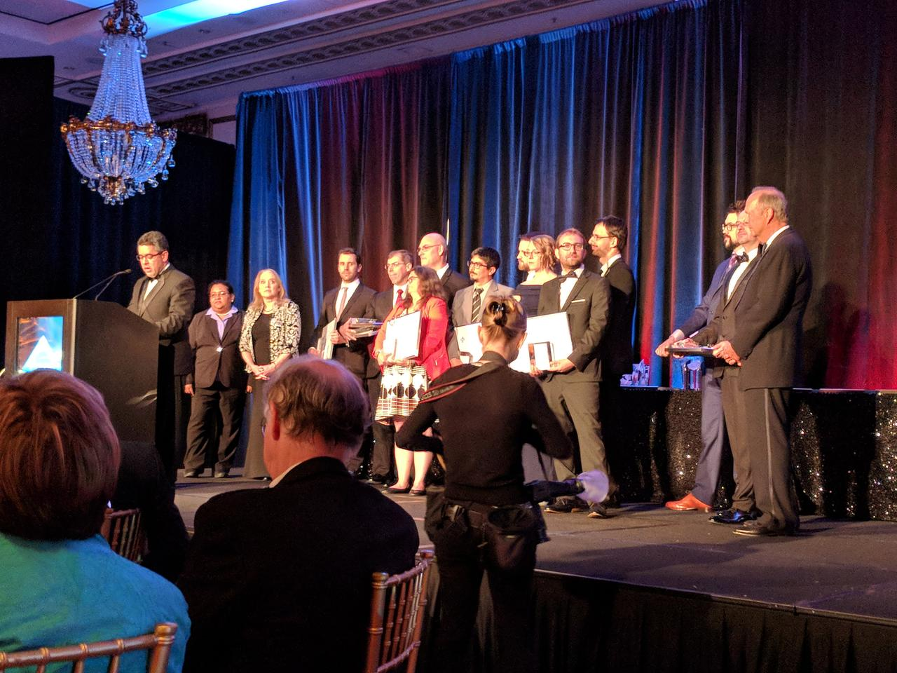
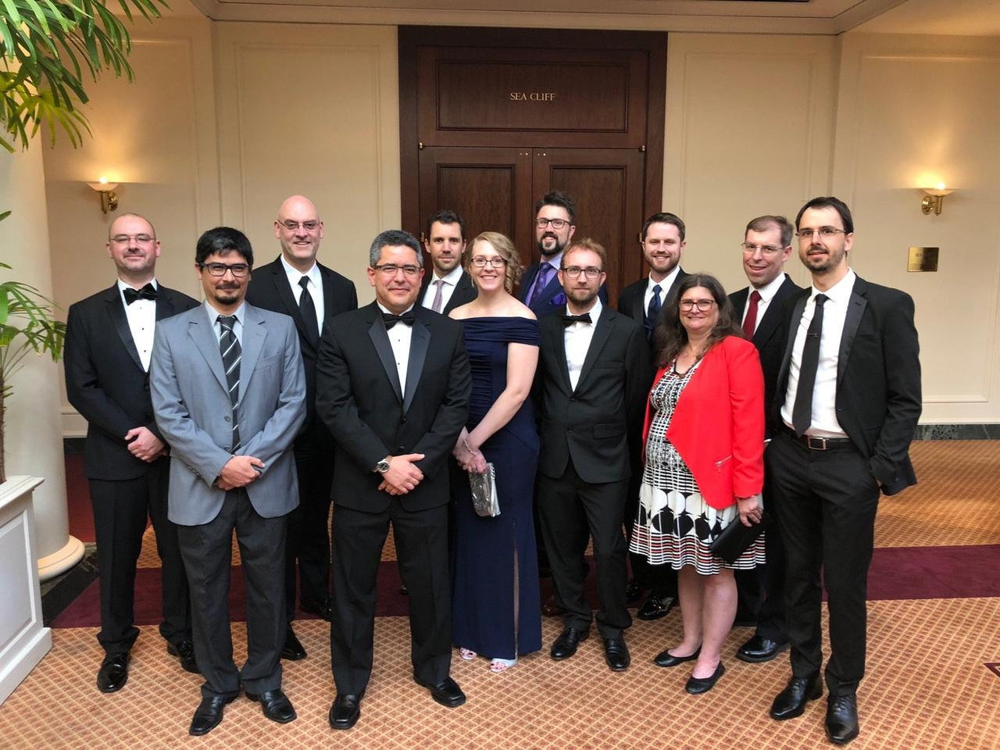

Some thoughts about the 2017 ACM Software System Award for Project Jupyter
I am very happy to inform you that Project Jupyter has been awarded the 2017 ACM Software System Award!
As part of the Jupyter Steering Council, I am one of the official recipients of the award, but I wanted to highlight that I am just one member of a large group of people (contributors and users) working together to push the Project Jupyter forward and beyond its limits.
Project Jupyter is an essential part of my life. It gave me the opportunity to work with amazing people, to learn a lot of new things, to help other people. Some years ago, I left academia for several reasons, but one of the most important ones was to find an opportunity to make a substantial impact on people’s lives. I wanted to be involved in something that could empower people to do amazing things. And I certainly believe that Project Jupyter filled that space and allowed me to achieve that goal more than I could imagine.
Why is Project Jupyter receiving the ACM Award?¶
There are several reasons, but let’s focus on the following:
1) Jupyter is explicitly designed for the task of computing interactively
Jupyter has become an important part of the daily workflow in research, education, journalism, and industry allowing people to process, analyze, and manipulate data and get insights from it in a fluid, pleasant, and effective way.
2) Jupyter fosters communication and collaboration through open standardized formats
The open and standardized Jupyter notebook file format is designed to capture, display and share natural language, code, and results in a single computational narrative. This is a key aspect of the scientific and research life cycle. You want to share your findings and thoughts with other people and Jupyter helps with that goal providing a self-contained and powerful computational narrative.
The stability and interoperability of open standards also provide a foundation for others to experiment, collaborate, and build tools inspired by their unique goals and perspectives. We have also provided tools to support Jupyter deployment in multi-user environments, making it easier to access common computational resources and share live computational environments. JupyterHub (and Binder) now supports industry deployment, large-scale education and reproducible research.
But the most important thing here, as I said before, is the Jupyter Community. IPython and Jupyter have grown to be the product of thousands of contributors and users. We are always seeking to ensure the project is welcoming, supports an increasingly diverse community, and helps solidify a foundation for it to be sustainable.
Let’s make it crystal clear: The project exists to serve the community and wouldn’t be possible without you.
So, thank YOU for your continuous support, contributions, and feedback!
PS
On a personal note, I would also like to thank Anaconda, Inc. I have been working here for a long time now and it was/is a great experience. I am grateful for the generous support they provided in building the next Jupyter experience, JupyterLab. And I am also grateful for the continuous support in my involvement with the Jupyter community. I really appreciate that!
Update (Jun)¶
Last weekend a big part of the Jupyter team received the announced prize in the ACM 2018 banquet at San Francisco, CA. Some pics or it did not happen!

A better quality one ;-)

Thanks again to all who contributes to the project!
Did you like the content? Great!
Or visit my support page for more information.
Btw, don't forget this blog post is an ipynb file itself! So, you can download it from the "Source" link at the top of the post if you want to play with it ;-)
Comments powered by Disqus